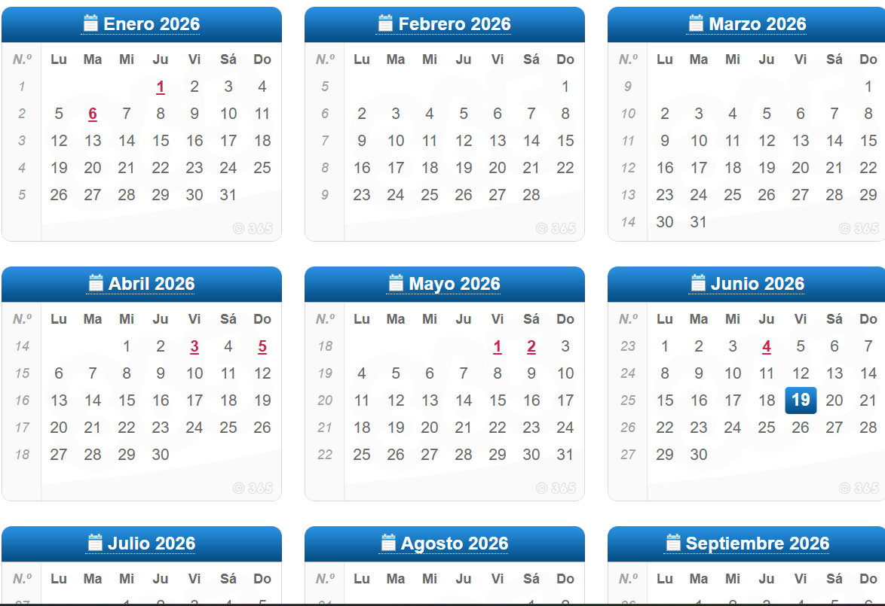
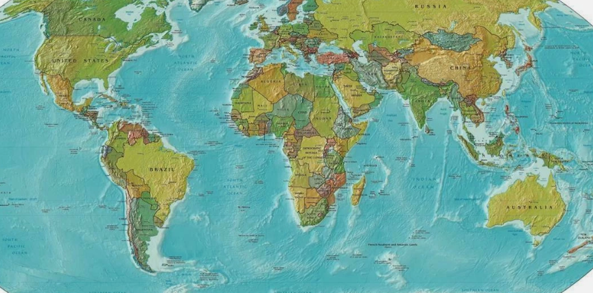
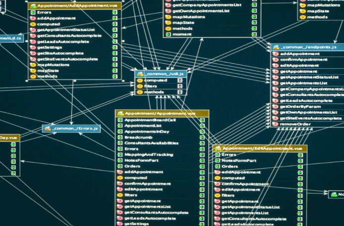

☕ Java
Desarrollo de aplicaciones orientadas a objetos utilizando clases, herencia, excepciones y colecciones.
Estudiante de Desarrollo de Aplicaciones Multiplataforma
Java · MySQL · Git · Desarrollo de Software
Soy estudiante de Desarrollo de Aplicaciones Multiplataforma (DAM) con interés en el desarrollo de software, las bases de datos y las buenas prácticas de programación.
Actualmente trabajo con tecnologías como Java, MySQL, Git y GitHub, desarrollando proyectos que me permiten ampliar mis conocimientos y mejorar mis habilidades como desarrollador.
Desarrollo de aplicaciones orientadas a objetos utilizando clases, herencia, excepciones y colecciones.
Diseño y gestión de bases de datos relacionales mediante consultas SQL, procedimientos y triggers.
Uso de ramas, commits, merges y control de versiones para el desarrollo de proyectos.
Gestión de repositorios remotos, documentación de proyectos y colaboración mediante Pull Requests.
Gestión de dependencias y automatización de la construcción de proyectos Java.
Desarrollo de pruebas unitarias para verificar el correcto funcionamiento del código.
Uso de terminal, administración básica del sistema y configuración de servicios.

Aplicación desarrollada en Java para la gestión y organización de horarios.

Aplicación desarrollada en Java para registrar viajes, destinos y experiencias de forma organizada.

Diseño e implementación de una base de datos relacional para la gestión de productos, clientes y pedidos.
En mi perfil de GitHub publico los proyectos y prácticas que desarrollo durante mi formación como desarrollador.
Ver perfil